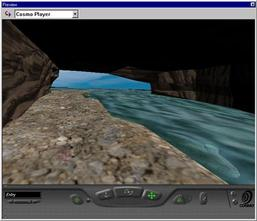
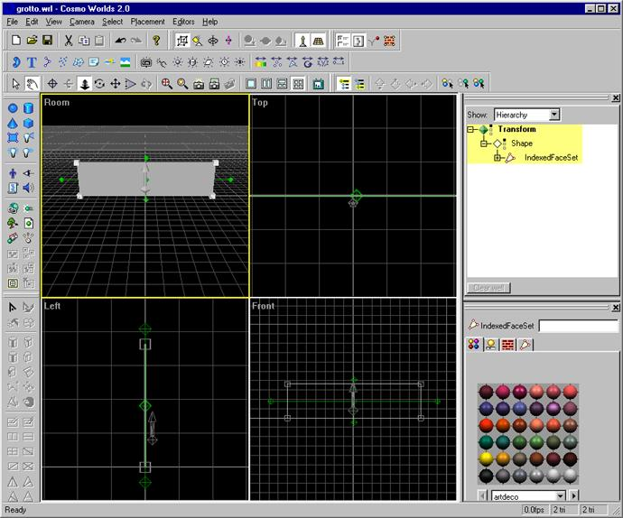
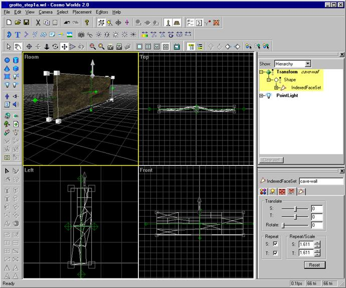
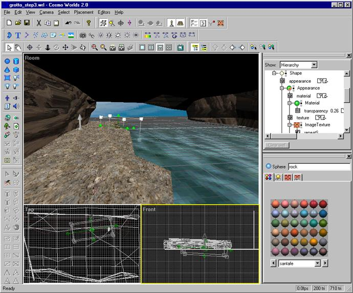
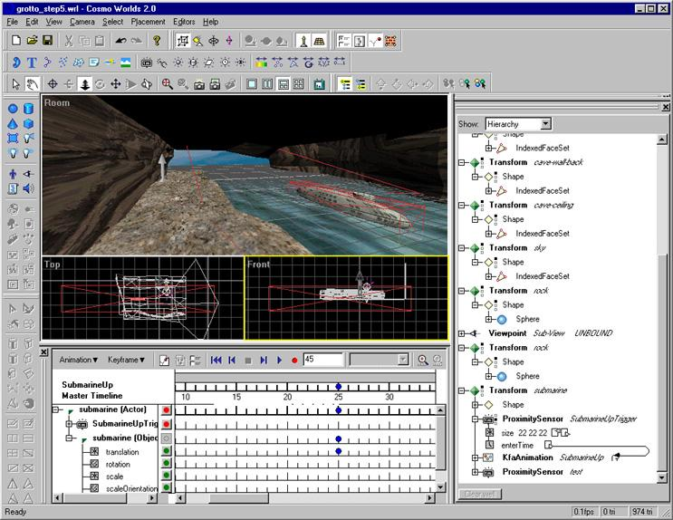
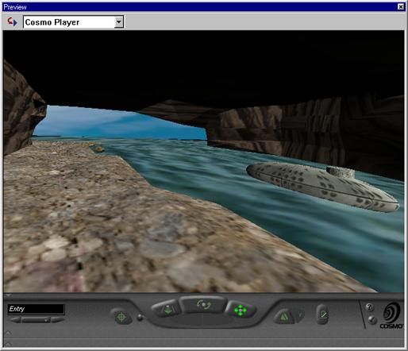

ROBERT
ROTHFARB | WORD | COSMO
WORLDS / WORLD BUILDING TUTORIAL
| Author's
Note: This
article was written in 1998 for 3D
Design Magazine. Cosmo Worlds is a VRML97 authoring tool originally
created by Silicon Graphics, Inc. SGI later created a software company
called Cosmosoftware which developed a suite of VRML and JAVA authoring
products. The Cosmo Player VRML Browser is one of the best VRML browsers
available and supports both accelerated and non-accelerated OpenGL. The
saga continues in that Cosmosoftware lasted about a year and was then
bought by Platinum Software. In the first quarter of 1999, Platinum Software
was acquired by Computer Associates. Before the sale of the company to
CA, Platinum notified the Web3D community that it was making the source
code to Cosmo Player, Cosmo Worlds, and other applications available under
an open source initiative. As of the summer of 1999, the Web3D community
is still anxiously waiting to know about the details of this release.
Many people purchased Cosmo Worlds when it was for sale by both Cosmosoftware
and Platinum. If you are a Cosmo Worlds user and have found your way here,
I hope this tutorial is helpful to you. The best place to check the status
of the source code release for Cosmo applications is at the Web3D
Consortium or at Web3D.about.com
|

The grotto world viewed with Cosmo Player |
Cosmo Worlds 2.0 is a
graphical modeling, animation, and scripting package for creating interactive
3D graphics for the web. Designed around the Virtual Reality Modeling Language,
now an international standard for delivering interactive 3d graphics on the
Internet, Cosmo Worlds is available now for Windows 95/NT. Previously available
only on the SGI platform, Worlds was one of the first VRML authoring tools.
In it’s latest form, the program is part of a family of web content creation
tools which includes Cosmo Code, a JAVA development system, HomeSpace Designer,
and a new animation program called PageFX.
As a design medium, VRML
offers many possibilities for creating fast loading animations, interactive
banner ads, real time games, visualizations / simulations applications, and
virtual worlds. We’re going to use Cosmo Worlds to create a virtual world
with some interactive objects, animation, and sound. The project is the creation
of an island cave environment with an underground pool. We’ll call it "the
Grotto. Once it’s created, you can link the Grotto to other scenes, add game-logic
in a scripting language or in JAVA, or develop it further as a multi-user
world. The cave contains several interactive objects including a submarine
which emerges from the water as you approach the water edge, an overhead circular
pod door bay with a control to open and close it, and a natural vertical flowing
water shaft with a spatialized audio sound effect.
World Building Basics
Cosmo Worlds has a simple
interface that allows you to display and configure several windows, editors,
and toolbars. To have handier access to all of World’s features, I found it’s
easier to make sure that all of the program’s toolbars and main function windows
are displayed. The buttons are intuitive, but the program’s ToolTips help
you remember which buttons do what. In addition to the standard orthogonal
and perspective viewports, an Outline Editor window and a Property Inspector
window give you quick access to object properties as well as the Scene Graph
of the world. For basic modeling functions, you don’t have to concern yourself
with the Scene Graph, but you will need to get in there for adding interactive
elements and any advanced scripting. If you’re not that familiar with VRML,
it’s a good idea to leave the Outline Editor window open so you can observe
the Scene Graph changes as you build your world. You’ll start to become familiar
with VRML’s hierarchical node structure as well as common parameters of different
nodes.
Creating the Grotto
We’ll start by laying
out the basic Grotto environment. The cave is a rectangular interior space,
which is open on one of the short ends. A cove extends into the cave and there
is a path along the edge of the cove. To help you view the geometry, make
sure the render style is set to wireframe for the orthogonal viewports and
to shaded for the perspective viewport. . To create the cave walls, we’ll
use the Create Face command to create a basic plane. Click in the front viewport
to create the face and align it to the viewport. You’ll see a Transform node
containing an indexed face set shape added to the Scene Graph in the Outline
Editor. In VRML, every object that isn’t one of the basic primitives is an
indexed face set. You can name the wall object in the scene graph by clicking
on the topmost node in it’s hierarchy, the Transform node, and entering a
label in the indexed face set field in the property inspector. As you get
more and more transform nodes in your world, it’ll be easier to identify elements
if they’re labeled. Naming elements is also important for scripting interactive
behaviors.

Elongate the face to
shape it like a long narrow cave wall by scaling it non-uniformly. We want
to sculpt the wall by adding some jagged edges and outcroppings now. An easy
way to do this is to subdivide the plane into additional polygons and move
various vertices perpendicular to the plane. To edit the points, edges, and
polygons (PEP) of a VRML primitive or imported object, you have to switch
to PEP editing mode. Select the plane and then select the PEP editing mode
toolbar icon. A red line appears around the object indicating you are in PEP
mode. Then, select the plane again and you’ll see various buttons become active
on the PEP modeling toolbar. There are several different functions for splitting
the plane into a greater number of faces. We’ll choose the one that lets us
split quadrilaterals into quarters. To add some surface variety, select one
of the new faces and sub-divide it using a different split function. Continue
sub-dividing some of the other faces, but don’t get too carried away.
You need to keep in mind
that effective virtual worlds require efficient use of polygons. The overall
polygon count can make or break your world in terms of what kind of machine
is required to navigate through it smoothly with a decent browser window size.
We’re designing the Grotto for an average Pentium class machine with basic
3D-hardware acceleration. Worlds shows you the polygon count in triangles
of both the currently selected object and for the entire world on the right
side of the program status bar. Bottom line: good VRML worlds have polygon
counts that are much lower than other types of 3d-design work. A good limit
to keep in mind is 1500 polys or less.
Still in PEP mode, we
want to slide some of those vertices outward from the plane to make some outcropping
areas. Select a vertex in the front viewport. Worlds offers several unique
"Dyna" tools for transforming and rotating elements including the
DynaBox, DynaPlane, DynaWheel, and DynaDot. These tools are powerful and fairly
intuitive, although it will take you a little while to get used to their operation.
Make sure the DynaBox tool is the only Dyna tool activated and then drag the
selected vertex (or its bounding box) sideways in the left viewport. Continue
pulling some vertices away from the plane, until the surface appears varied.
Let’s add a rock texture
to the cave wall. First, deselect it by clicking outside of the object. Select
it again and then go to the property inspector panel. Switch to the texture
palette and choose the second texture tile on the third row of the Dirt and
Wood palette. You can see the file name referenced for the texture in the
Outline Editor view of the scene graph under Transform -> Shape -> Appearance
-> ImageTexture à URL. The texture from the library that we used is
called ‘wood13.gif.’ Don’t worry! We’ll make it look like rock. We need to
scale the rock texture appropriately for the length of each wall. The Texture
Editor panel on the Property Inspector has convenient controls for translating,
scaling, and repeating textures. I used the following texture transform values:
translate S = 0.3, translate T = 0.48, Rotate = 100, Scale S = 2.144, Scale
T = 2.358. You can use these or tweak the values interactively until the texture
looks the way you like it. You might want to add a point light and move it
around the scene to see how the texture looks when it’s illuminated.

Now that we have a decent
looking cave wall, let’s scale it and duplicate it to create the opposite
side of the cave. Let’s also add a dirt path and a face for the water. Shape
the cave by changing the angle slightly of the opposite cave wall. You can
also move sets of vertices from sections of the wall by clicking and dragging
once you are in PEP edit mode. Try changing the direction of the wall from
the front to the back of the cave to make it look jagged. Shape the dirt path
so that it has some surface contours and bumps near the water’s edge. Use
the same technique of moving vertices to give it some variety. We’ll use the
‘dirt2.gif’ texture for the dirt path, which is the third tile on the Dirt
and Wood texture palette. For the water texture, we’ll choose the third tile
in the fifth row of the Nature palette. To make the water a little transparent,
go to the Material Editor tab in the Property Inspector and set the Transparency
value of the material to 0.26. Add a few rocks at the water’s edge using the
sphere primitive and flattening them. Choose a rock texture from the texture
palette that complements the dirt path and cave walls.
Lights, Cameras, Action
To help visualize our
world, it’s time to add a viewpoint. Click on the Add Viewpoint button and
place a viewpoint near the end of one side of the cave wall. Label this viewpoint
‘Entry’ in the property inspector in both the name field and the ‘Description
in browser’ field. This will allow us to reset to this viewpoint at any time
once we view the world in the browser. Worlds has a Preview mode which uses
the Cosmo Player VRML Browser as a preview window. In theory this is great
because it lets you see exactly how your world will look and behave in its
interactive form. The problem I had, however, was that the Player failed to
initialize if I had set the program to use hardware acceleration. To get it
to work at all, I had to switch to software Open GL even though my Diamond
Fire GL 1000 Pro graphics accelerator supports Open GL hardware acceleration
under Windows 95. Most times, toggling preview mode crashed the application
or I got a message saying it would not work without Cosmo Player being installed
correctly. Since I have what I thought was a correctly installed Cosmo Player,
I usually opted to start Netscape and drag my saved project file into it to
view the VRML rather than hassle with it. This is a minor inconvenience, but
I hope Cosmo resolves the compatibility issues between the Player and Worlds
so that they can work together more seamlessly with current hardware manufacturers’
display drivers.
The world is starting
to take form but it still looks a little flat. To give it some depth cues
and interesting lighting, add a directional light pointing downward into the
mouth of the cave to simulate sunlight. As with the low polygon design goal,
you should also limit the number of lights in a world as this can really bog
down a browser’s playback and navigation speed. We’ll add a large face perpendicular
to the front of the cave and texture it with a sky texture. Adjust the UV
texture scaling so you can see some blue sky and a few clouds. Make sure you
scale the face rather large and set it a distance away from the cave so that
it still looks like a distant sky when you walk along the path and look out
at the open water from the front of the cave.

Now it’s time to add
a little mystery. We’re going to make a small submarine and submerge it in
the water. Create a sphere and stretch it. Then create a small cylinder and
scale it for the top of the submarine. Select both objects and convert them
to PEP objects using the convert button on the modeling toolbar. Once converted,
select the merge button and combine the two so there is just one submarine
object. Add a texture for the submarine (I used the first tile on the fourth
row of the Color 2 palette since it looks a little like a metallic ship hull.)
Lower the submarine into the water, making sure it’s completely submerged.
Since we set a transparency value on the water texture, you should still be
able to see the top of the submarine through the water.
Using the Keyframe Animator,
create a new animation, with the submarine selected. We’ll create a 25-frame
animation with a keyframe for the submarine in the up position at frame 25.
Add the submarine as an actor in the animation by clicking the Add Actor button
on the Keyframe Animator's toolbar. Move the timeline’s dotted line to frame
25 by dragging the yellow diamond. Next, move the submarine to the up position
and hit the record button next to the submarine-Actor line to set the keyframe.
Preview the animation using the playback controls to make sure it’s right.
This simple animation shows you how easy it is to set up some basic movement
in your world. The keyframe animator can be used to create much more complex
animations, including animation of hierarchies and coordinate interpolations.
We’d like to make the
submarine emerge from the depths of the cove as we navigate toward the edge
of the water, and to do this we’ll take advantage of a proximity sensor. Worlds
lets you easily set up different kinds of triggers for animations and scripted
behaviors. Open up the Animator Properties window and click the Trigger Tab.
Make sure the submarine Actor is selected in the timeline and then Select
‘Proximity Sensor.’ This will add the sensor to the scene graph. By default,
the connection of the proximity sensor to the animation starting to play is
not made. VRML’s event model uses ROUTE statements to make connections between
sensors, so, using the Outline Editor, you’ll need to route the Proximity
Sensor’s enterTime parameter to the submarine keyframe animation’s time sensor
startTime parameter. That sounds a little intense but once you look at the
Proximity Sensor and KfaAnimation nodes and their parameters, it will make
sense. The Outline Editor allows you to expand or collapse nodes in the hierarchy
so you can choose different levels of detail to view the structure. One last
thing you need to do is to make sure the submerged submarine’s proximity sensor
is large enough to trigger the animation. In the editor, change the sensor’s
size parameter values to 22 22 22. You’ll see the red bounding box for the
sensor around the submarine expand and cover the edge of the path. We’re ready
to try it!

Now preview the world
or load it into your VRML browser. You’ll see the world load with the default
viewpoint we set up called ‘Entry.’ Slowly move toward the edge of the water
along the path until you see the submerged submarine. Continue moving slowly
toward the edge and you should see the submarine automatically rise to the
surface. Voila!

The final step to create
a finished world with Cosmo Worlds is to Publish the world. Although you could
gather all the texture files manually and compress the textures and VRML file,
this handy feature does all this for you and even checks dependencies for
in-lined objects, textures, and script files. Publishing offers several optimization
options including gzipping, floating point precision, and optimization of
textures. Though some VRML browsers don’t support file compression, most do
at this point so it’s a good idea to do this. The smaller you make the package
that defines your world, the faster it will download. Once you create the
package containing the VRML file and all it’s associated textures, you’re
ready to upload the files to a web server. Make sure the web server you are
using is set up to serve VRML files. Your system administrator should be able
to let you know if it is. Then anybody with a VRML 97 compliant browser can
experience your world.
Click here
to view the grotto world.
In a future tutorial,
we'll dig deeper into VRML and the interactive design capabilities of Cosmo
Worlds.
Robert Rothfarb is
an interactive multimedia designer who builds virtual worlds when he’s not
watching the X-Files or exploring real worlds. You can reach him by e-mail
at rob@hiddenline.com